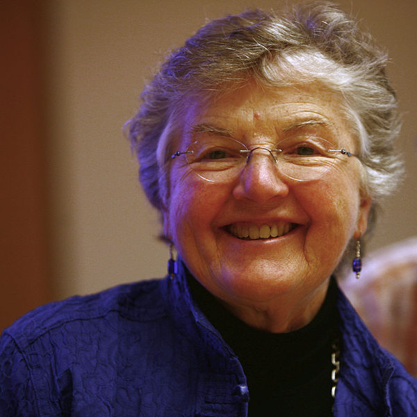

Ada Lovelace
(1815 - 1852)

An analyst of Charles Babbages's analytical engine and is often described as the "first computer programmer."
Grace Hopper
(1906 - 1992)

A United State Navy officer and the first programmer of the Harvard Mark I, Known as the "Mother of COBOL".
She developed the first ever compiler for an electronic computer, known as A-O.
Frances Allen
(1932 - )

The first female IBM Fellow in 1989. In 2006 she became the first female recipient of ACM's Turing Award.
Barbara Liskov
(1939 - )

Developed the Liskov substitution principle. Liskov was also the winner of the Turing Prize in 2008.
Anita Borg
(1949 - 2003)

The founding director of the institute for Women and Technology (IWT)
Maria Klawe
(1951 - )

The first women to become President of Harvaed Mudd College since its founding in 1955 and was ACM president from 2002 until 2004.